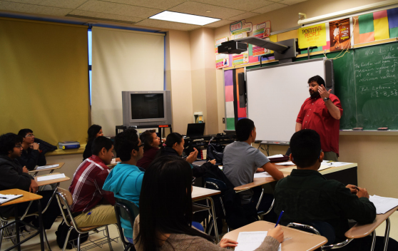

By Mir Raonaq
Mr. Raynor’s AP Calculus BC class plans to beat the odds.
Advanced Placement (AP) classes can lead to college credits for students who pass the exam, but at Queens Voc students struggle to pass the exam. Of the 69 AP exams taken by Queens Voc students last spring, none scored a five, none scored a Twenty-three students took the AP exam for European History, three students scored a three, earning the college credits, and the other 20 scored a on
Advanced Placement (AP) classes can lead to college credits for students who pass the exam, but at Queens Voc students struggle to pass the exam. Of the 69 AP exams taken by Queens Voc students last spring, none scored a five, none scored a Twenty-three students took the AP exam for European History, three students scored a three, earning the college credits, and the other 20 scored a one. Four students earned the college credits from the exam
Last spring, six students took the AP exam for Art History and all scored a one. Eleven students took the AP Psychology exam, and again all scored a one. Twenty-three students took the AP exam for European History, three students scored a three, earning the college credits, and the other 20 scored a one. In AB Calculus, 18 students took the AP exam, 16 scored a one, one student scored a two, and one student scored a three, earning college credits. In AP Physics, 11 students took the exam, eight students scored a one and three scored a two.
Each AP exam score is a weighted combination of the student’s scores on the multiplechoice section and the free response section. The final score is reported on a five-point scale. Obtaining a three is passing, anything lower than a three is failing and no college credit if given. There aren’t many students who have taken the AP exam and passed with more than a two,” said Mr. Gorman, assistant principal of the Math and Science Department. Nevertheless, he said, “It shows a great deal of effort when a student takes the class because it helps develop academic scores.”
Each AP exam score is a weighted combination of the student’s scores on the multiplechoice section and the free response section. The final score is reported on a five-point scale. Obtaining a three is passing, anything lower than a three is failing and no college credit if given. There aren’t many students who have taken the AP exam and passed with more than a two,” said Mr. Gorman, assistant principal of the Math and Science Department. Nevertheless, he said, “It shows a great deal of effort when a student takes the class because it helps develop academic scores.”
Last year, Queens Voc offered five AP classes: Psychology taught two biggest fundraisers were senior Mildred Alvarez, who raised $800 and freshman Philip Papaccio, who raised $410. “When I heard about the Breast Cancer walk, I thought it would be fun, but I didn’t think I’d raise $410. I had a lot of fun, and it made me feel great because it was for a good cause. I can’t wait for next year,” said Phillip Papaccio.
“Every year that I’ve participated in the Breast Cancer Walk, it has been more successful than the previous year,” said junior Tia Singh. “It’s just a fun day walking to support people that you don’t know personally. Advocates who participate not only help breast cancer, but they help create a caring atmosphere,” she said.